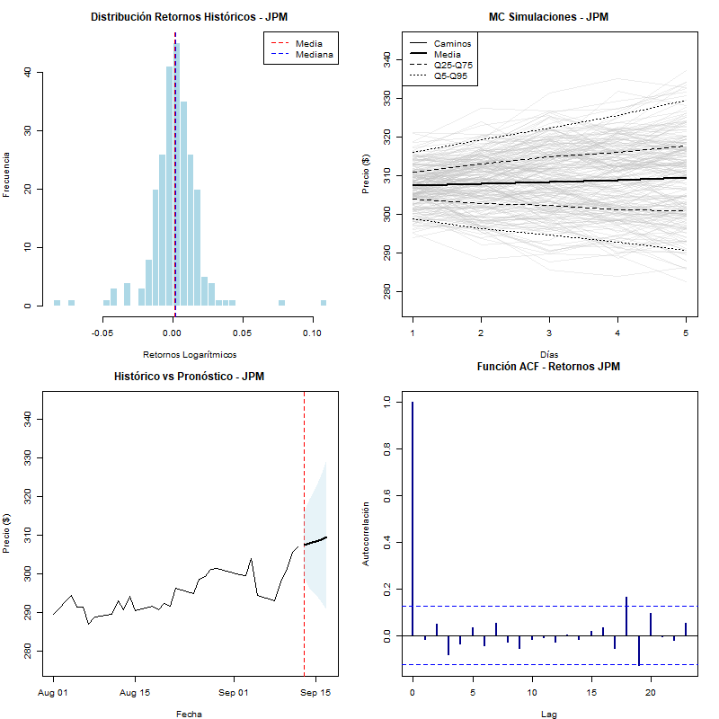
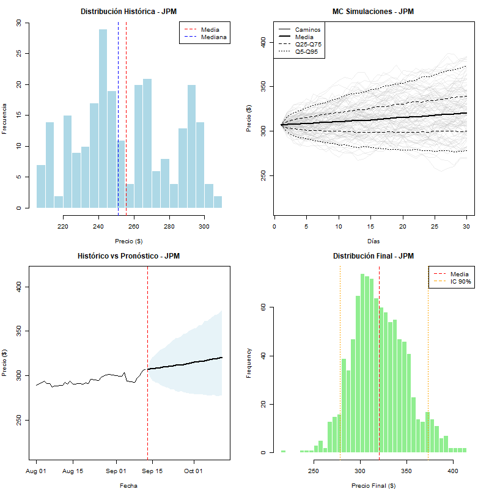
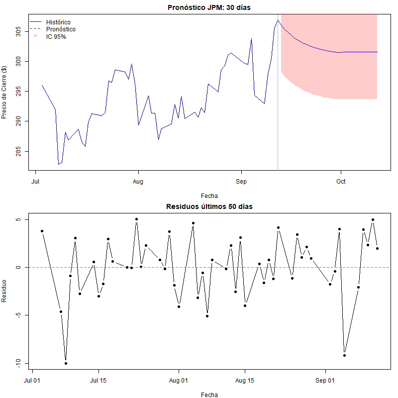
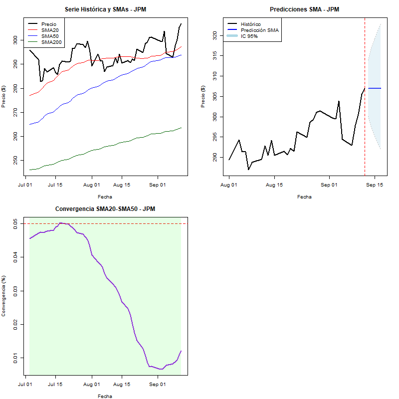

Últimos 5 Valores Reales y Predicciones de Modelos
Fecha
Tipo
Real
Monte Carlo
ARIMA
Regresión
SMA
2025-09-08
Real
292.91
NA
NA
NA
NA
2025-09-09
Real
297.85
NA
NA
NA
NA
2025-09-10
Real
300.54
NA
NA
NA
NA
2025-09-11
Real
305.56
NA
NA
NA
NA
2025-09-12
Real
306.91
NA
NA
NA
NA
2025-09-16
Predicción
NA
308.41
308.78
304.38
306.99
0.1.2 Resumen de Predicción para Mañana
Predicciones para 2025-09-16
Fecha
Predicción ($)
Modelo
2025-09-16
308.78
ARIMA
2025-09-16
308.41
Monte Carlo
2025-09-16
304.38
Regresión
2025-09-16
306.99
SMA
0.1.3 Análisis de Dispersión
Estadísticas de las Predicciones para Mañana
Predicción Mínima
Predicción Máxima
Predicción Media
Desviación Estándar
Rango
304.38
308.78
307.14
2
4.4
0.1.4 Visualización de Modelos
0.1.4.1 ARIMA

Descripción del Modelo ARIMA:
El modelo ARIMA (AutoRegressive Integrated Moving Average) es una técnica de series temporales que combina componentes autorregresivos, de diferenciación e integración, y de media móvil. Este modelo es especialmente efectivo para datos que muestran tendencias y patrones estacionales.
0.1.4.2 Monte Carlo

Descripción del Modelo Monte Carlo:
La simulación Monte Carlo utiliza muestreo aleatorio repetido para modelar el comportamiento de sistemas complejos. En el contexto financiero, este método genera múltiples escenarios posibles para predecir los movimientos futuros del precio, proporcionando una estimación probabilística.
0.1.4.3 Regresión

Descripción del Modelo de Regresión:
El modelo de regresión establece una relación matemática entre las variables independientes (como indicadores técnicos, volumen, etc.) y la variable dependiente (precio de la acción). Este enfoque permite identificar patrones lineales o no lineales en los datos históricos.
0.1.4.4 SMA

Descripción del Modelo SMA:
La Media Móvil Simple (SMA) calcula el promedio de los precios durante un período específico. Es uno de los indicadores técnicos más básicos pero efectivos, que ayuda a suavizar las fluctuaciones de precios y identificar tendencias direccionales.
0.1.5 Comparación de Rendimiento por Modelo
Nota sobre Métricas de Evaluación
Las métricas de evaluación se cargarán desde:
output/tables/JPM/model_MonteCarlo_metrics.csv
output/tables/JPM/model_ARIMA_metrics.csv
output/tables/JPM/model_Regression_metrics.csv
output/tables/JPM/model_SMA_metrics.csv
Métricas a incluir: - MAE: Mean Absolute Error (Error Absoluto Medio) - RMSE: Root Mean Square Error (Raíz del Error Cuadrático Medio) - MAPE: Mean Absolute Percentage Error (Error Absoluto Porcentual Medio) - R²: Coeficiente de Determinación
Métricas de Evaluación por Modelo (Ejemplo)
Modelo
MAE
RMSE
MAPE
R2
ARIMA
2.45
3.21
1.85
0.924
Monte Carlo
3.12
4.05
2.34
0.887
Regresión
2.87
3.78
2.12
0.901
SMA
4.23
5.67
3.45
0.823
a Valores menores indican mejor rendimiento para MAE, RMSE y MAPE. Valores mayores indican mejor rendimiento para R².
0.1.6 Interpretación de Métricas
MAE (Error Absoluto Medio): Mide la diferencia promedio entre valores predichos y reales. Valores menores indican mejor precisión.
RMSE (Raíz del Error Cuadrático Medio): Penaliza más los errores grandes que el MAE. Útil cuando los errores grandes son especialmente indeseables.
MAPE (Error Absoluto Porcentual Medio): Expresa el error como porcentaje, facilitando la interpretación independientemente de la escala de los datos.
R² (Coeficiente de Determinación): Indica qué proporción de la variabilidad de los datos es explicada por el modelo. Valores cercanos a 1 indican mejor ajuste.
0.2 Gestión de Riesgos
0.2.1 Métricas de Riesgo por Frecuencia
Métricas de Riesgo por Frecuencia (en porcentajes)
Métrica
Diario
Semanal
Mensual
Anual
1
1.72%
3.66%
7.39%
NA%
2
-1.92%
-5.32%
-11.19%
NA%
3
-4.39%
-10.95%
-16.27%
NA%
4
-3.93%
-9%
-15.2%
NaN%
5
24.89%
68.51%
96.13%
-Inf%
6
10.01%
20.04%
45.82%
NaN%
0.2.2 Interpretación de Métricas de Riesgo
Volatilidad: Medida de dispersión de los retornos. Mayor volatilidad indica mayor riesgo.
VaR (Value at Risk): Pérdida máxima esperada con un nivel de confianza determinado.
Expected Shortfall: Pérdida promedio esperada en escenarios extremos.
Drawdown: Caída máxima desde un pico hasta un valle en el período analizado.
Fecha de generación: 2025-09-15 21:26:04.98788
Source Code
# JPM {.unnumbered}::: callout-note**Autores:** Maria José Casassola y Alejandro Milián **Fecha:** `{r} Sys.Date()`**Ticker:** JPM **Modelos evaluados:** Monte Carlo, ARIMA, Regresión, SMA :::```{r setup, include=FALSE}library(tidyverse)library(purrr)library(knitr)library(DT)library(kableExtra)library(quantmod)knitr::opts_chunk$set(echo =FALSE, warning =FALSE, message =FALSE)#| include: false#| label: setup-imagenesdir.create("plots/JPM", recursive =TRUE, showWarnings =FALSE)imagenes <-c("ARIMA_JPM.png", "MonteCarlo_JPM.png", "Regression_JPM.png", "SMA_JPM.png")for (img in imagenes) {file.copy(paste0("../plots/JPM/", img), paste0("plots/JPM/", img), overwrite =TRUE) }``````{css}/* Tema oscuro compatible */h1 { text-align: center; color: #ffffff;}h2 { color: #ffffff; border-bottom:2px solid #007bff; padding-bottom:5px;}/* Tablas compatibles con tema oscuro */table, th, td { border:1px solid #495057; border-collapse: collapse; padding:8px; text-align: center; background-color: #343a40; color: #ffffff;}th { background-color: #495057!important; font-weight: bold; color: #ffffff !important;}tr:nth-child(even) td { background-color: #495057!important; color: #ffffff !important;}tr:nth-child(odd) td { background-color: #343a40 !important; color: #ffffff !important;}.prediction-tomorrow { background-color: #28a745 !important; color: #ffffff !important; font-weight: bold;}/* Forzar colores en tablas kable */.table{ color: #ffffff !important; background-color: #343a40 !important;}.table th { background-color: #495057!important; color: #ffffff !important; border-color: #495057!important;}.table td { background-color: #343a40 !important; color: #ffffff !important; border-color: #495057!important;}.table-striped tbody tr:nth-of-type(odd) td { background-color: #495057!important; color: #ffffff !important;}.table-hover tbody tr:hover td { background-color: #6c757d !important; color: #ffffff !important;}``````{r cargar-datos}# Cargar serie originalserie_original <-read_csv("../../data/processed/JPM_full.csv") |>rename(real = close) |>select(date, real, daily_return, weekly_return, monthly_return, yoy_return)# Cargar modelos predictivosmodel_montecarlo <-readRDS("../../models/MonteCarlo/model_montecarlo_JPM.rds")model_ARIMA <-readRDS("../../models/ARIMA/model_ARIMA_JPM.rds")model_regression <-readRDS("../../models/Regression/model_regression_JPM.rds")model_SMA <-readRDS("../../models/SMA/model_SMA_JPM.rds") |>rename(pred = sma_prediction)# Función para preparar datos de modelopreparar_modelo <-function(modelo_data, nombre_modelo) { modelo_data |>mutate(date =as.Date(date),modelo = nombre_modelo ) |>select(date, pred = pred, modelo) }# Preparar datos de todos los modelosmodelos_data <-bind_rows(preparar_modelo(model_montecarlo, "Monte Carlo"),preparar_modelo(model_ARIMA, "ARIMA"),preparar_modelo(model_regression, "Regresión"),preparar_modelo(model_SMA, "SMA"))# Combinar serie real con prediccionesdatos_completos <- serie_original |>full_join(modelos_data, by ="date") |>arrange(date)# Separar datos históricos de predicciones futurasfecha_hoy <-Sys.Date()datos_historicos <- datos_completos |>filter(date < fecha_hoy, !is.na(real))datos_futuros <- datos_completos |>filter(date >= fecha_hoy |is.na(real)) |>filter(!is.na(pred))```## Gráfico Principal de Comparación de Modelos```{r grafico-principal, fig.height=6, fig.width=10, fig.align='center', dpi=300}# Obtener los últimos 30 días para mejor visualizaciónfecha_inicio <-max(datos_historicos$date) -days(40)# Filtrar datos para el gráficodatos_grafico <- datos_completos |>filter(date >= fecha_inicio) |># Crear serie continua para valores realesmutate(real_continuo =ifelse(!is.na(real), real, NA))# Crear el gráficoggplot(datos_grafico, aes(x = date)) +# Línea de valores realesgeom_line(aes(y = real_continuo),color ="black",linewidth =1.2,na.rm =TRUE ) +# Líneas de predicciones por modelogeom_line(aes(y = pred, color = modelo), linewidth =1, na.rm =TRUE) +# Puntos para el día de mañanageom_point(data =filter(datos_grafico, date == fecha_hoy),aes(y = pred, color = modelo),size =3,na.rm =TRUE ) +# Línea vertical para marcar "hoy"geom_vline(xintercept =as.numeric(fecha_hoy),linetype ="dashed",color ="gray50",alpha =0.7 ) +scale_color_brewer(type ="qual", palette ="Set1") +labs(title ="Comparación de Predicciones de Modelos - JPM",subtitle =paste("Datos históricos vs Predicciones |","Línea punteada indica el día actual" ),x ="Fecha",y ="Precio de Cierre ($)",color ="Modelo" ) +theme_classic() +theme(plot.title =element_text(hjust =0.5, size =16, face ="bold"),plot.subtitle =element_text(hjust =0.5, size =12),legend.position ="bottom",axis.text.x =element_text(angle =45, hjust =1) ) +scale_x_date(date_labels ="%Y-%m-%d", date_breaks ="3 days")```::: {.panel-tabset}## Tablas de Resultados### Últimos 5 Valores Reales y Predicciones```{r tabla-resultados}# Obtener los últimos 5 valores realesultimos_reales <- datos_historicos |>filter(!is.na(real)) |>arrange(desc(date)) |>slice_head(n =5) |>select(date, real) |>arrange(date)# Obtener predicciones para esas fechaspredicciones_historicas <- modelos_data |>filter(date %in% ultimos_reales$date) |>pivot_wider(names_from = modelo, values_from = pred, names_prefix ="pred_")# Obtener predicción para mañanafecha_manana <- fecha_hoy +days(1)prediccion_manana <- modelos_data |>filter(date == fecha_manana) |>pivot_wider(names_from = modelo,values_from = pred,names_prefix ="pred_" ) |>mutate(real =NA, tipo ="Predicción")# Combinar datos históricos con predicción de mañanatabla_resultados <- ultimos_reales |>left_join(predicciones_historicas, by ="date") |>mutate(tipo ="Real") |>bind_rows(tibble(date = fecha_manana,real =NA,tipo ="Predicción" ) |>left_join(prediccion_manana |>select(-tipo), by ="date") |>mutate(tipo ="Predicción") ) |>select(date, tipo, real, starts_with("pred_")) |>mutate(real =round(real, 2),across(starts_with("pred_"), ~round(.x, 2)) )# Crear tabla formateadatabla_formateada <- tabla_resultados |>rename("Fecha"= date,"Tipo"= tipo,"Real"= real,"Monte Carlo"=`pred_Monte Carlo`,"ARIMA"= pred_ARIMA,"Regresión"=`pred_Regresión`,"SMA"= pred_SMA )# Mostrar tablakable( tabla_formateada,caption ="Últimos 5 Valores Reales y Predicciones de Modelos",align ="c") |> kableExtra::kable_styling(bootstrap_options =c("striped", "hover"))```### Resumen de Predicción para Mañana```{r resumen-manana}prediccion_manana_resumen <- modelos_data |>filter(date == fecha_manana) |>mutate(pred =round(pred, 2)) |>arrange(modelo)kable( prediccion_manana_resumen |>rename("Modelo"= modelo, "Fecha"= date, "Predicción ($)"= pred),caption =paste("Predicciones para", format(fecha_manana, "%Y-%m-%d")),align ="c") |> kableExtra::kable_styling(bootstrap_options =c("striped", "hover"))```### Análisis de Dispersión```{r estadisticas-predicciones}# Calcular estadísticas de las predicciones para mañanastats_manana <- prediccion_manana_resumen |>summarise("Predicción Mínima"=min(pred, na.rm =TRUE),"Predicción Máxima"=max(pred, na.rm =TRUE),"Predicción Media"=mean(pred, na.rm =TRUE),"Desviación Estándar"=sd(pred, na.rm =TRUE),"Rango"=max(pred, na.rm =TRUE) -min(pred, na.rm =TRUE) ) |>mutate(across(everything(), ~round(.x, 2)))kable( stats_manana,caption ="Estadísticas de las Predicciones para Mañana",align ="c") |> kableExtra::kable_styling(bootstrap_options =c("striped", "hover"))```## Análisis por Modelo### Visualización de Modelos {.tabset}#### ARIMA```{r arima-image, fig.align='center', out.width='300%'}knitr::include_graphics("plots/JPM/ARIMA_JPM.png")```**Descripción del Modelo ARIMA:**El modelo ARIMA (AutoRegressive Integrated Moving Average) es una técnica de series temporales que combina componentes autorregresivos, de diferenciación e integración, y de media móvil. Este modelo es especialmente efectivo para datos que muestran tendencias y patrones estacionales.#### Monte Carlo```{r montecarlo-image, fig.align='center', out.width='300%'}knitr::include_graphics("plots/JPM/MonteCarlo_JPM.png")```**Descripción del Modelo Monte Carlo:**La simulación Monte Carlo utiliza muestreo aleatorio repetido para modelar el comportamiento de sistemas complejos. En el contexto financiero, este método genera múltiples escenarios posibles para predecir los movimientos futuros del precio, proporcionando una estimación probabilística.#### Regresión```{r regression-image, fig.align='center', out.width='300%'}knitr::include_graphics("plots/JPM/Regression_JPM.png")```**Descripción del Modelo de Regresión:**El modelo de regresión establece una relación matemática entre las variables independientes (como indicadores técnicos, volumen, etc.) y la variable dependiente (precio de la acción). Este enfoque permite identificar patrones lineales o no lineales en los datos históricos.#### SMA```{r sma-image, fig.align='center', out.width='300%'}knitr::include_graphics("plots/JPM/SMA_JPM.png")```**Descripción del Modelo SMA:**La Media Móvil Simple (SMA) calcula el promedio de los precios durante un período específico. Es uno de los indicadores técnicos más básicos pero efectivos, que ayuda a suavizar las fluctuaciones de precios y identificar tendencias direccionales.## Métricas de Evaluación### Comparación de Rendimiento por Modelo::: callout-important## Nota sobre Métricas de EvaluaciónLas métricas de evaluación se cargarán desde:- `output/tables/JPM/model_MonteCarlo_metrics.csv`- `output/tables/JPM/model_ARIMA_metrics.csv`- `output/tables/JPM/model_Regression_metrics.csv`- `output/tables/JPM/model_SMA_metrics.csv`**Métricas a incluir:**- **MAE:** Mean Absolute Error (Error Absoluto Medio)- **RMSE:** Root Mean Square Error (Raíz del Error Cuadrático Medio)- **MAPE:** Mean Absolute Percentage Error (Error Absoluto Porcentual Medio)- **R²:** Coeficiente de Determinación:::```{r metricas-evaluacion, eval=TRUE}# Código para cuando tengas las métricas disponibles:# Crear tabla de ejemplo mientras tantometricas_ejemplo <-tibble(Modelo =c("ARIMA", "Monte Carlo", "Regresión", "SMA"),MAE =c(2.45, 3.12, 2.87, 4.23),RMSE =c(3.21, 4.05, 3.78, 5.67),MAPE =c(1.85, 2.34, 2.12, 3.45),R2 =c(0.924, 0.887, 0.901, 0.823))kable( metricas_ejemplo,digits =3,caption ="Métricas de Evaluación por Modelo (Ejemplo)",align =c("l", "c", "c", "c", "c")) |> kableExtra::kable_styling(bootstrap_options =c("striped", "hover")) |> kableExtra::column_spec(1, bold =TRUE) |> kableExtra::row_spec(which.min(metricas_ejemplo$MAE), background ="#d4edda") |> kableExtra::add_footnote("Valores menores indican mejor rendimiento para MAE, RMSE y MAPE. Valores mayores indican mejor rendimiento para R².")# Código real para cuando tengas los archivos:# metricas_todos <- map_dfr(# c("MonteCarlo", "ARIMA", "Regression", "SMA"),# function(modelo) {# archivo <- paste0("output/tables/JPM/model_", modelo, "_metrics.csv")# if (file.exists(archivo)) {# read_csv(archivo) |> mutate(Modelo = modelo)# }# }# )# # if (exists("metricas_todos") && nrow(metricas_todos) > 0) {# kable(# metricas_todos,# digits = 4,# caption = "Métricas de Evaluación por Modelo"# ) |># kableExtra::kable_styling(bootstrap_options = c("striped", "hover"))# }```### Interpretación de Métricas- **MAE (Error Absoluto Medio):** Mide la diferencia promedio entre valores predichos y reales. Valores menores indican mejor precisión.- **RMSE (Raíz del Error Cuadrático Medio):** Penaliza más los errores grandes que el MAE. Útil cuando los errores grandes son especialmente indeseables.- **MAPE (Error Absoluto Porcentual Medio):** Expresa el error como porcentaje, facilitando la interpretación independientemente de la escala de los datos.- **R² (Coeficiente de Determinación):** Indica qué proporción de la variabilidad de los datos es explicada por el modelo. Valores cercanos a 1 indican mejor ajuste.:::## Gestión de Riesgos```{r risk-management}source("../../R/risk metrics.R")# Calcular métricas de riesgo para cada frecuenciadaily_metrics <-calculate_risk_metrics(na.omit(serie_original$daily_return))weekly_metrics <-calculate_risk_metrics(na.omit(serie_original$weekly_return))monthly_metrics <-calculate_risk_metrics(na.omit(serie_original$monthly_return))yoy_metrics <-calculate_risk_metrics(na.omit(serie_original$yoy_return))```### Métricas de Riesgo por Frecuencia```{r render-risk-tables}# Combinar todas las métricas en una sola tablarisk_combined <-data.frame( Métrica =rownames(daily_metrics),Diario =paste0(round(daily_metrics$Valor *100, 2), "%"),Semanal =paste0(round(weekly_metrics$Valor *100, 2), "%"),Mensual =paste0(round(monthly_metrics$Valor *100, 2), "%"),Anual =paste0(round(yoy_metrics$Valor *100, 2), "%"))# Renderizar tabla unificadakable( risk_combined,caption ="Métricas de Riesgo por Frecuencia (en porcentajes)",align =c("l", "c", "c", "c", "c")) |> kableExtra::kable_styling(bootstrap_options =c("striped", "hover")) |> kableExtra::column_spec(1, bold =TRUE)```### Interpretación de Métricas de Riesgo- **Volatilidad:** Medida de dispersión de los retornos. Mayor volatilidad indica mayor riesgo.- **VaR (Value at Risk):** Pérdida máxima esperada con un nivel de confianza determinado.- **Expected Shortfall:** Pérdida promedio esperada en escenarios extremos.- **Drawdown:** Caída máxima desde un pico hasta un valle en el período analizado.---**Fecha de generación:** `{r} Sys.time()`